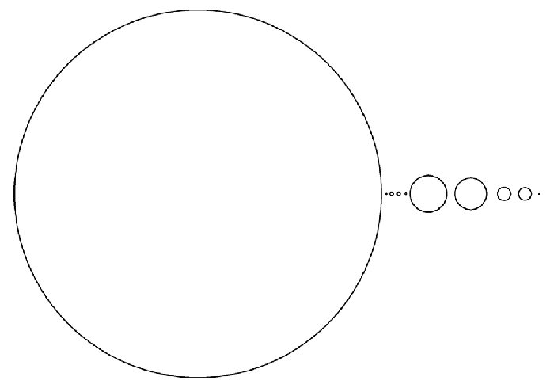

Le système solaire
Le système solaire se trouve sur l'un des bras spiraux de notre galaxie, la Voie lactée. Sa période de révolution autour du centre galactique est de 225 millions d'années. Il est constitué du Soleil, des neuf planètes en orbite autour de lui avec leurs satellites, d'astéroïdes, comètes, météores et poussières. Vous pouvez voir l'ordre des planètes à partir du Soleil dans le menu à votre gauche.
Les planètes se distinguent par leur taille et leur composition. Les planètes telluriques - Mercure, Vénus, la Terre et Mars - sont de petits corps solides, essentiellement rochaux. Les quatres suivantes - Jupiter, Saturne, Uranus et Neptune - sont des planètes géantes formées de gaz (hydrogène et hélium).
Comparaison à l'échelle des diamètres du Soleil et de ses planètes.
Source : Wikipédia
Formation du système solaire
On pense que le système solaire s'est formé à partir d'un nuage de gaz en rotation : la nébuleuse primitive. Tournant de plus en plus vite sur lui-même, ce nuage s'est aplati en forme de disque sous l'action de forces centrifuges et gravitationnelles. Les gaz fortement condensés au centre du disque ont formé un proto-Soleil. Le processus de compression et d'échauffement des gaz s'est poursuivi jusqu'au seuil de déclanchement des réactions thermonucléaires, notre Soleil prenant alors l'aspect que nous lui connaissons.
Les planètes sont issues des anneaux périphériques du disque. On ne sait pas exactement comment elles se sont formées, mais il semblerait que ce soit par accrétion de noyaux de matière. Seule une partie de la matière du disque initial s'est agglomérée en planètes. Le reste s'est dispersé dans l'espace.
Source : Étoiles et planètes, Gründ, 1988
Plan du site | Contact | Site réalisé par Mathieu Morainville.